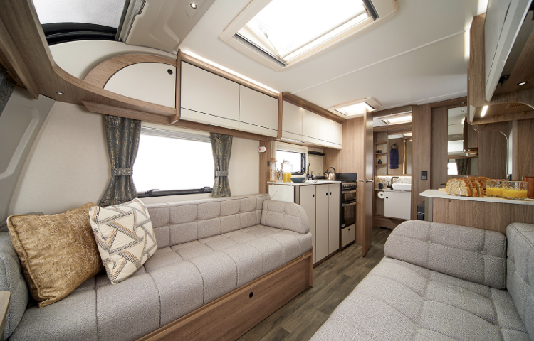

Swift Challenger 580

❮
❯
Price: £5450
Location: Cornwall
This second-hand caravan offers a very cozy and functional living spaces which is perfect for small families or small get togethers. Inside the caravan, it is best to describe it as compact yet well designed. We say this because it has a really nice kitchen, living room and sleeping areas can accommodate 4 people comfortably which you can partially see in the image.
The kitchen is well equipped with features including 4 gas burners, sink with a tap for easy cleanup, basic kitchen cupboards for storage, a small fridge and ample countertop space. Natural lights seeps through the many windows of this caravan which is perfect for relaxing, socialising and dining!